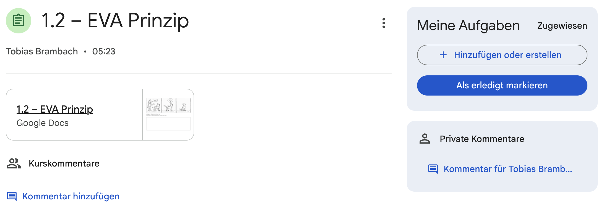
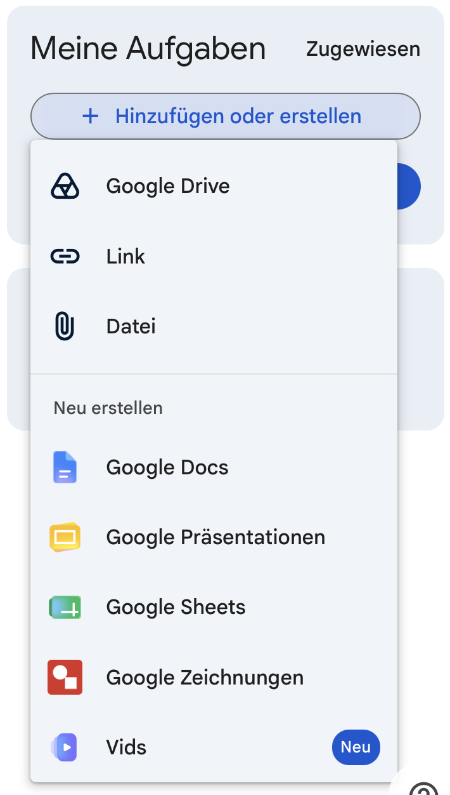
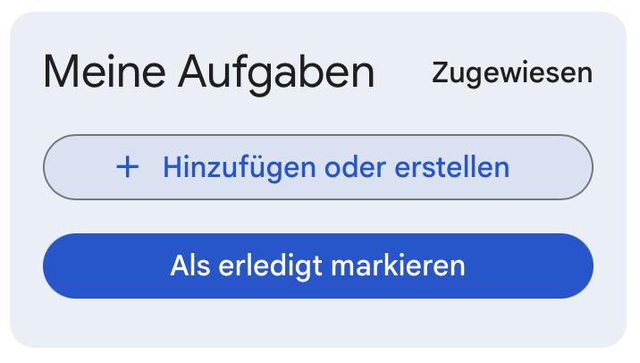
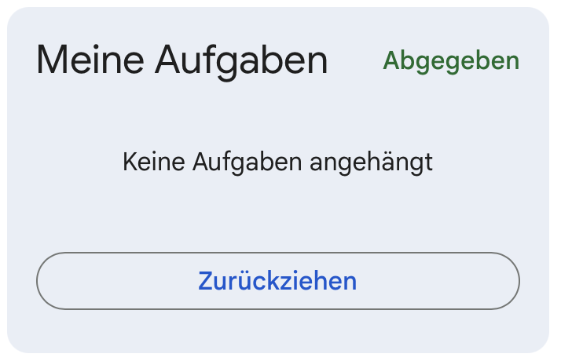

Google Classroom
Eine Aufgabe bearbeiten und abgeben
Finde deine Aufgabe, hänge deine Arbeit an und prüfe die Abgabe.
Öffne classroom.google.com mit deinem Schulkonto. Wähle deinen Kurs, dann Kursaufgaben und die richtige Aufgabe. Lies zuerst die Anweisungen und beachte den Abgabetermin.
So sieht eine Aufgabe aus
Links findest du die Aufgabe und vielleicht ein Material der Lehrkraft. Rechts steht Meine Aufgaben. Dort fügst du deine eigene Datei hinzu und gibst die Aufgabe ab.

Eine Datei oder einen Link hinzufügen
Auf „Hinzufügen oder erstellen“ klicken
Wähle Google Drive für eine Datei aus deiner Ablage, Datei für etwas von deinem Computer oder Link für eine Internetadresse.

Du kannst auch direkt ein neues Google-Dokument erstellen. Deine Arbeit auswählen
Wähle die richtige Datei aus und klicke auf Hinzufügen. Prüfe, ob sie nun unter „Meine Aufgaben“ steht.
Abgeben und prüfen
Auf die richtige Schaltfläche achten
Klicke auf Abgeben, wenn du deine Datei einreichst, und bestätige. Bei manchen Aufgaben steht stattdessen Als erledigt markieren. Nutze das nur, wenn du laut Aufgabe nichts als Datei abgeben sollst oder bereits alles Nötige erledigt hast.

„Als erledigt markieren“ ist nicht dasselbe wie eine Datei anzuhängen. Status kontrollieren
Nach der Abgabe sollte bei „Meine Aufgaben“ Abgegeben stehen. Prüfe auch, ob die richtige Datei angehängt ist.
Eine Abgabe zurückziehen
Du hast etwas vergessen? Klicke bei der abgegebenen Aufgabe auf Zurückziehen und bestätige. Ergänze oder ändere deine Arbeit. Gib die Aufgabe danach unbedingt erneut ab. Sonst bleibt sie zurückgezogen. Achte dabei auf den Abgabetermin.

Wenn dein Gruppenpartner abgibt
Originaldatei teilen
Die Person, der die Gruppendatei gehört, gibt sie für den Partner frei. Zum gemeinsamen Bearbeiten braucht der Partner die Rolle Bearbeiter. So geht das Teilen in Drive.
Nach der gemeinsamen Arbeit kopieren
Der abgebende Partner öffnet die fertige Datei mit seinem Schulkonto und erstellt eine eigene Kopie in seiner Ablage. Die Kopie erhält einen klaren Namen. Spätere Änderungen am Original erscheinen nicht automatisch in der Kopie.
Eigene Kopie anhängen und abgeben
Der Partner hängt seine Kopie unter „Meine Aufgaben“ an und gibt die Aufgabe ab. Eine Datei, die ihm nur freigegeben wurde, ist nicht seine eigene Abgabedatei.
Die Schritte zu Abgabe und Zurückziehen folgen der Google-Classroom-Hilfe. Schaltflächen können je nach Aufgabe etwas anders aussehen.